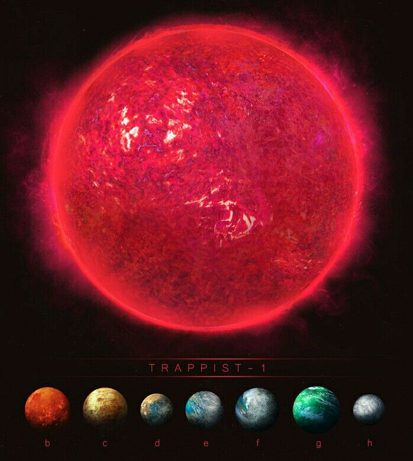

TRAPPIST-1 är en röd dvärgstjärna som ligger 40 ljusår från jorden och har åtta planeter som kretsar runt den (TRAPPIST-1b - TRAPPIST-1h). Yttertemperaturen på stjärnan är ungefär 2290°C, vilket gör det till en av de kallaste stjärnor vi vet om. Den är också uppskattad att vara runt 7,6 miljarder år gammal. Det är gamlare än vårt solsystem!